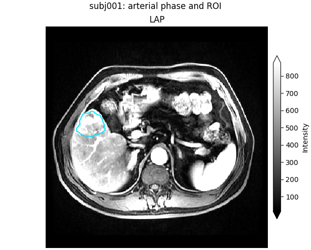
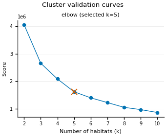
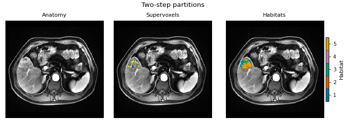
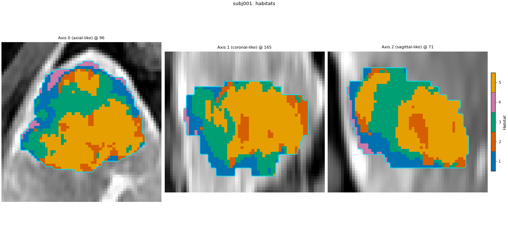
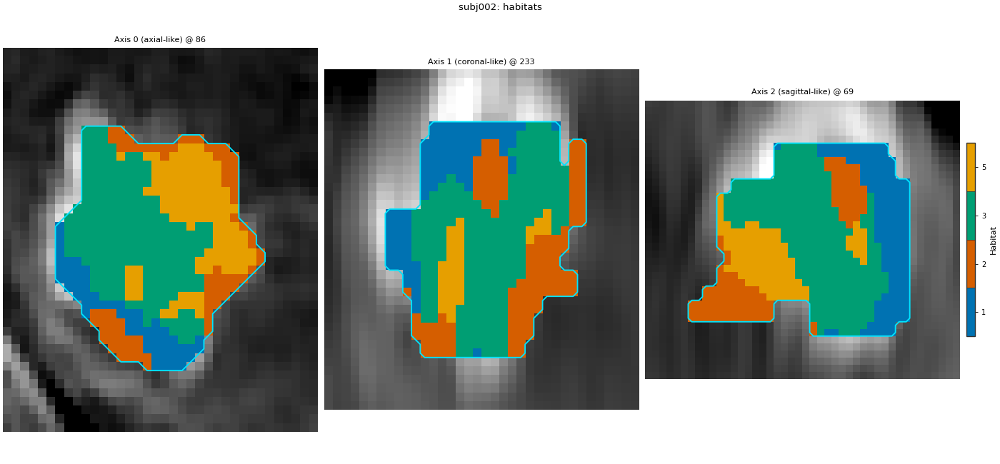
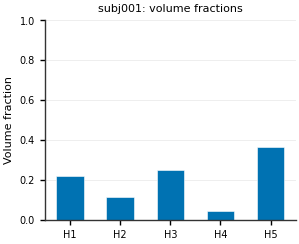
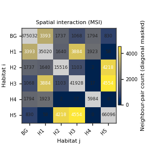
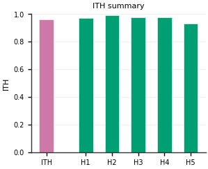
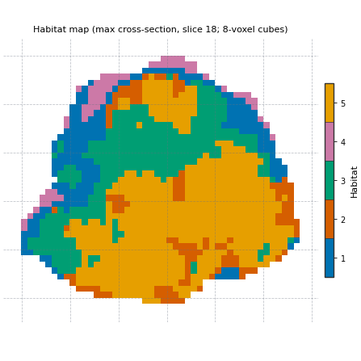
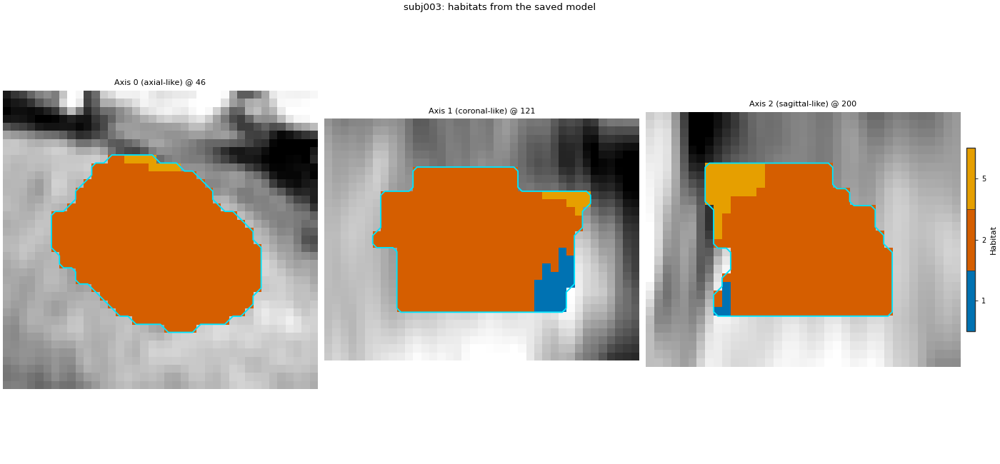

Note
Go to the end to download the full example code.
A complete habitat analysis
One HabitatSpec declares the whole study. One
fit_predict runs it. The stage list below is the same two-step
analysis as Quickstart: Python API: raw DCE
intensities, 30 supervoxels, one shared model, then volume, MSI, ITH
and graph features.
Later Guide pages change one stage, or drop partition / pool.
They are not a second analysis. Change DATA / MODALITIES /
ROI to your preprocessed tree.
Load the cohort
Two subjects define the habitats. The third is a new patient at the end of the page. The official demo pack is cached after the first download. sphinx_gallery_thumbnail_number = 3
from pathlib import Path
import matplotlib.pyplot as plt
from habit.contracts import HabitatModel, cohort_from_directory
from habit.datasets import fetch_demo
from habit.kernels import habitat_ith_dispersion, ith_score, spatial_interaction_matrix
from habit.recipes import Study
from habit.spec import HabitatSpec, Spec, Stage
from habit.viz import (
plot_cluster_validation_from_report,
plot_habitat_graph_slice,
plot_habitat_overlay,
plot_habitat_volume_fractions,
plot_intensity_slice,
plot_ith_summary,
plot_msi_matrix,
plot_partition_triptych,
)
# Change DATA / MODALITIES / ROI to your preprocessed layout.
DATA = fetch_demo()
MODALITIES = ("pre_contrast", "LAP", "PVP", "delay_3min")
ROI = "LAP"
cohort = cohort_from_directory(DATA, modalities=MODALITIES, roi=ROI)
train, new_patient = cohort[:2], cohort[2:3]
print(cohort)
subject = train[0]
Path("out").mkdir(exist_ok=True)
fig = plot_intensity_slice(
subject.image("LAP"),
roi_mask=subject.mask(ROI),
roi_contour=True,
image_label="LAP",
title=f"{subject.subject_id}: arterial phase and ROI",
)
fig.savefig("out/full_pipeline_input.png", dpi=150, bbox_inches="tight")
plt.show()

HABIT demo data (cached)
DATA (preprocessed root): C:\Users\dongm\.habit_data\demo-data-v1\preprocessed
On-disk inventory of this folder:
subjects (5): subj001, subj002, subj003, subj004, subj005
image series: LAP, PVP, delay_3min, pre_contrast
mask keys: LAP, PVP, delay_3min, pre_contrast
example image: images/subj001/delay_3min/WATER__BH_Ax_LAVA_Flex_3min_Series0012.nrrd
example mask: masks/subj001/delay_3min/WATER__BH_Ax_LAVA_Flex_10min_Series0017_mask.nrrd
Your own data must use the same folder tree (change IDs / series names):
DATA/
images/<subject_id>/<modality>/<one image file>
masks/<subject_id>/<roi>/<one mask file>
Then load it with the same call the demos use:
cohort = cohort_from_directory(DATA, modalities=("LAP",), roi="LAP")
Swap DATA / modalities / roi to match your tree. Mask key is often the
same as one image series (here LAP).
Cohort(5 subjects [subj001, subj002, subj003, subj004, subj005])
F:\work\habit_project\habit\viz\intensity.py:616: UserWarning: Display geometry conflict: image/anatomy direction does not match mask/label direction. Using the mask/label direction so coronal/sagittal superior-up follows the labelled anatomy. Pass direction= to override.
resolved_direction, resolved_spacing = resolve_display_geometry(
Declare every stage
Stage’s first argument is a label you choose. Spec names a
registered component and its parameters. random_seed seeds every
stochastic stage (partition and fit), so a rerun paints the same map.
two_step_habitat(...) builds this list for you. Drop pool and
each subject is clustered alone (one-step). Drop partition and
voxels are clustered directly (direct pooling). Those two designs are
Defining habitats inside each subject and
Pooling voxels across the cohort.
spec = HabitatSpec(
name="full_pipeline_two_step",
stages=(
# extract: one intensity column per DCE phase, voxels inside the ROI.
Stage("extract", Spec("raw", {"modalities": list(MODALITIES), "roi": ROI})),
# partition: 30 supervoxels per tumour. These rows, not voxels,
# are what the shared model clusters.
Stage("partition", Spec("kmeans", {"n_supervoxels": 30})),
# pool: stack every training subject's supervoxels into one matrix.
Stage("pool", Spec("pool")),
# fit: one k-means for the cohort. Try 2..10 habitats, keep the elbow.
# n_init=10 restarts each candidate count.
Stage(
"fit",
Spec(
"kmeans",
{
"min_habitats": 2,
"max_habitats": 10,
"validation": "elbow",
"n_init": 10,
},
),
),
# assign: nearest centroid paints a habitat id onto every supervoxel,
# then onto the voxels that belong to it.
Stage("assign", Spec("nearest_centroid")),
# quantify: one row per subject. The Spec name is the feature family.
Stage("volume", Spec("volume")),
Stage("msi", Spec("msi")),
Stage("ith", Spec("ith_score")),
# graph: 8-voxel cubes, habitat-labelled nodes. Extended metrics off
# so the table stays the short default set.
Stage("graph", Spec("graph", {"include_extended_metrics": False})),
),
random_seed=0,
)
result = Study(spec).fit_predict(train)
print(result.habitat_model.summary())
Cohort.map[_ComputeUnits]: 0%| | 0/2 [00:00<?, ?it/s]
Cohort.map[_ComputeUnits]: 50%|█████ | 1/2 [00:05<00:05, 5.99s/it]
Cohort.map[_ComputeUnits]: 100%|██████████| 2/2 [00:07<00:00, 3.72s/it]
Cohort.map[_ComputeUnits]: 100%|██████████| 2/2 [00:07<00:00, 3.72s/it]
Cohort.map[_AssignPrecomputedUnits]: 0%| | 0/2 [00:00<?, ?it/s]
Cohort.map[_AssignPrecomputedUnits]: 50%|█████ | 1/2 [00:01<00:01, 1.42s/it]
Cohort.map[_AssignPrecomputedUnits]: 100%|██████████| 2/2 [00:02<00:00, 1.14s/it]
Cohort.map[_AssignPrecomputedUnits]: 100%|██████████| 2/2 [00:02<00:00, 1.14s/it]
HabitatModel kmeans-3432f3b65bfec11a
habitats : 5
features (4) : pre_contrast, LAP, PVP, delay_3min
defining cohort : n=2
modalities : pre_contrast, LAP, PVP, delay_3min
cohort digest : cc1b16a34cc7478d...
produced by : habitat_model_fitter.kmeans
habit version : 3.0.0
random seed : 0
preprocessing state: inertia, selection_report, validation
How many habitats
The fitter scores every candidate count. The marked point is the one kept, and the report is stored on the model.
report = result.habitat_model.preprocessing_state["selection_report"]
fig = plot_cluster_validation_from_report(report)
fig.savefig("out/full_pipeline_elbow.png", dpi=150, bbox_inches="tight")
plt.show()

Habitat maps
Supervoxels, then habitats, on one slice. The same colour is the same
habitat in every patient because pool and fit ran once.
habitat_map = result.habitat_maps[0]
fig = plot_partition_triptych(subject.image("LAP"), result.units[0], habitat_map, axis=0)
fig.savefig("out/full_pipeline_triptych.png", dpi=150, bbox_inches="tight")
plt.show()
for one, one_map in zip(train, result.habitat_maps):
fig = plot_habitat_overlay(
one.image("LAP"),
one_map,
title=f"{one.subject_id}: habitats",
crop_to="labels",
)
fig.savefig(f"out/full_pipeline_habitats_{one.subject_id}.png", dpi=150, bbox_inches="tight")
plt.show()



F:\work\habit_project\habit\viz\habitat_core.py:1110: UserWarning: Display geometry conflict: image/anatomy direction does not match mask/label direction. Using the mask/label direction so coronal/sagittal superior-up follows the labelled anatomy. Pass direction= to override.
resolved_direction, resolved_spacing = resolve_display_geometry(
F:\work\habit_project\habit\viz\habitat_overlay.py:806: UserWarning: Display geometry conflict: image/anatomy direction does not match mask/label direction. Using the mask/label direction so coronal/sagittal superior-up follows the labelled anatomy. Pass direction= to override.
resolved_direction, resolved_spacing = resolve_display_geometry(
F:\work\habit_project\habit\viz\habitat_overlay.py:806: UserWarning: Display geometry conflict: image/anatomy direction does not match mask/label direction. Using the mask/label direction so coronal/sagittal superior-up follows the labelled anatomy. Pass direction= to override.
resolved_direction, resolved_spacing = resolve_display_geometry(
Feature table
One row per subject: volume fractions, MSI, ITH, and graph columns produced by the quantify stages above.
table = result.features.frame.set_index("subject")
print(table.shape[1], "columns")
columns = [
c
for c in table.columns
if c.endswith("_volume_fraction")
] + ["ith_score", "contrast", "graph_num_nodes_total"]
print(table[columns].round(3).to_string())
663 columns
habitat_1_volume_fraction habitat_2_volume_fraction habitat_3_volume_fraction habitat_4_volume_fraction habitat_5_volume_fraction ith_score contrast graph_num_nodes_total
subject
subj001 0.221 0.116 0.252 0.047 0.364 0.961 1.700 516.0
subj002 0.181 0.242 0.478 0.000 0.099 0.842 1.197 126.0
One subject, four views of that table
Volume fractions are columns of the table. MSI, ITH and the graph slice are drawn from the same label map the table used.
labels = habitat_map.label_array
fractions = {
hid: float(table.loc[subject.subject_id, f"habitat_{hid}_volume_fraction"])
for hid in habitat_map.habitat_ids
}
fig = plot_habitat_volume_fractions(fractions, title=f"{subject.subject_id}: volume fractions")
fig.savefig("out/full_pipeline_volume_fractions.png", dpi=150, bbox_inches="tight")
plt.show()
n_classes = max(habitat_map.habitat_ids) + 1
fig = plot_msi_matrix(
spatial_interaction_matrix(labels, n_classes=n_classes),
habitat_ids=habitat_map.habitat_ids,
)
fig.savefig("out/full_pipeline_msi.png", dpi=150, bbox_inches="tight")
plt.show()
fig = plot_ith_summary(float(ith_score(labels)), dispersion=habitat_ith_dispersion(labels))
fig.savefig("out/full_pipeline_ith.png", dpi=150, bbox_inches="tight")
plt.show()
fig = plot_habitat_graph_slice(labels, block_size=8)
fig.savefig("out/full_pipeline_graph.png", dpi=150, bbox_inches="tight")
plt.show()




Save the model and label a new patient
The .habitatmodel file is the habitat definition. Loading it does
not refit. The new patient gets the training centroids.
result.save("out/full_pipeline", write_maps=True)
model = HabitatModel.load("out/full_pipeline/habitat_model.habitatmodel")
prediction = Study.from_model(model).predict(new_patient)
fig = plot_habitat_overlay(
new_patient[0].image("LAP"),
prediction.habitat_maps[0],
title=f"{new_patient[0].subject_id}: habitats from the saved model",
crop_to="labels",
)
fig.savefig("out/full_pipeline_new_patient.png", dpi=150, bbox_inches="tight")
plt.show()

Cohort.map[_LabelAndDescribe]: 0%| | 0/1 [00:00<?, ?it/s]
Cohort.map[_LabelAndDescribe]: 100%|██████████| 1/1 [00:02<00:00, 2.05s/it]
Cohort.map[_LabelAndDescribe]: 100%|██████████| 1/1 [00:02<00:00, 2.05s/it]
F:\work\habit_project\habit\viz\habitat_overlay.py:806: UserWarning: Display geometry conflict: image/anatomy direction does not match mask/label direction. Using the mask/label direction so coronal/sagittal superior-up follows the labelled anatomy. Pass direction= to override.
resolved_direction, resolved_spacing = resolve_display_geometry(
Total running time of the script: (0 minutes 19.922 seconds)